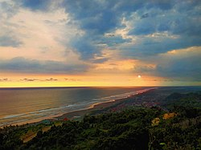
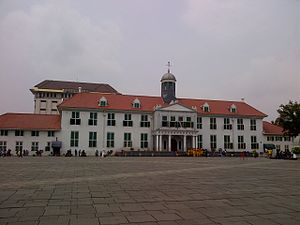

 Pantai Parangtritis (Jawa: ꦥꦱꦶꦱꦶꦂ ꦥꦫꦁꦠꦿꦶꦠꦶꦱ꧀, translit. Pasisir Parangtritis) adalah tempat wisata yang terletak di Kalurahan Parangtritis, Kapanéwon Kretek, Kabupaten Bantul, Daerah Istimewa Yogyakarta. Jaraknya kurang lebih 27 km dari pusat kota. Pantai ini menjadi salah satu destinasi wisata terkenal di Yogyakarta dan telah menjadi ikon pariwisata di Yogyakarta. Pantai ini mempunyai nilai simbolis yang merupakan garis yang bersifat magis yang menghubungkan Panggung Krapyak, Keraton Yogyakarta, Tugu Yogyakarta dan Gunung Merapi yang dikenal sebagai Garis Imajiner Yogyakarta.Selengkapnya
 Kota Tua Jakarta, juga dikenal dengan sebutan Batavia Lama (Oud Batavia), adalah sebuah wilayah kecil di Jakarta, Indonesia. Wilayah khusus ini memiliki luas 1,3 kilometer persegi melintasi Jakarta Utara dan Jakarta Barat (Pinangsia, Taman Sari dan Roa Malaka). Dijuluki "Permata Asia" dan "Ratu dari Timur" pada abad ke-16 oleh pelayar Eropa, Jakarta Lama dianggap sebagai pusat perdagangan untuk benua Asia karena lokasinya yang strategis dan sumber daya melimpah.Selengkapnya
Kembali ke Atas